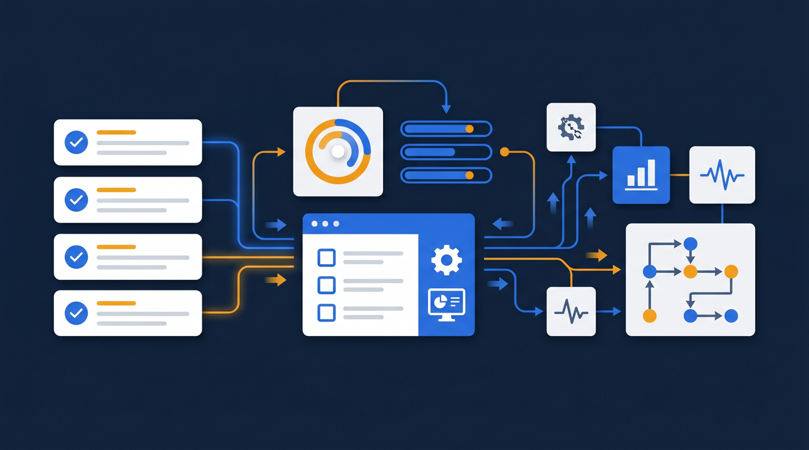
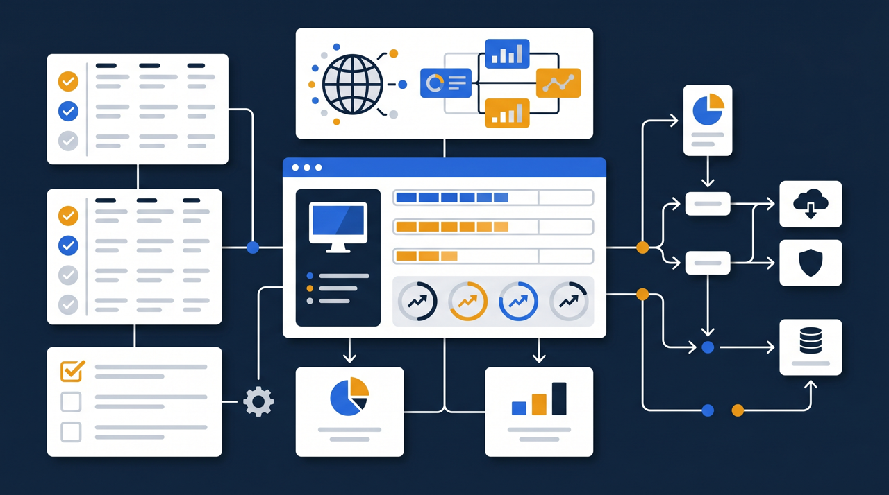
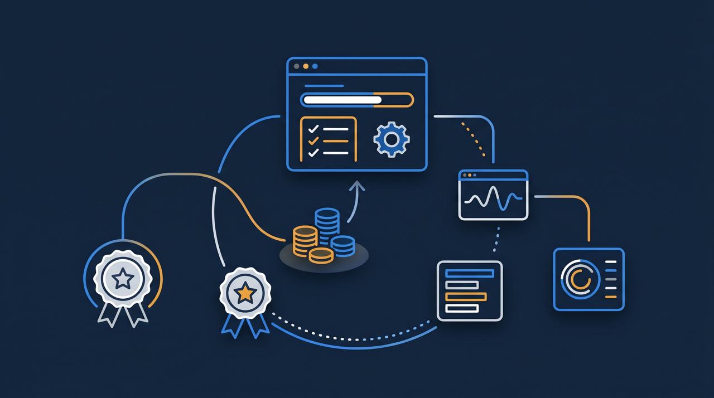

「まずは無料のeラーニングツールから始めてみよう」——コストを抑えたい企業にとって、無料という言葉はとても魅力的に響きますよね。確かに、小さく試す入口としては有効です。ただ、無料には無料なりの理由があり、運用を続けていくと見えてくる制約もあります。この記事では、無料eラーニングツールのメリットとデメリットを整理し、選ぶときに気をつけたい点をお伝えします。

無料eラーニングツールとは
無料eラーニングツールとは、研修動画やテストを配信して学んでもらう機能を、費用をかけずに利用できるサービスのことです。完全に無料のものから、一定の範囲までは無料で使え、それを超えると有料になるもの（いわゆるフリーミアム型）まで、いくつかの形があります。
近年は、こうした無料で始められるサービスが増えてきました。背景には、まずは試してもらって、必要になったら有料プランに移ってもらう、という提供側の考え方があります。利用者にとっては、初期費用をかけずに「eラーニングとはどういうものか」を体験できるので、導入の第一歩として選ばれやすいわけですね。
ただ、ここで押さえておきたいのは、無料ツールは「お試し版」や「機能を絞った版」であることが多い、という点です。すべての機能が無条件で使えるわけではなく、どこかに制約が設けられているのが一般的です。この前提を理解したうえで使うかどうかで、後の満足度が大きく変わってきます。
無料eラーニングツールのメリット
まずは良い面から見ていきましょう。無料ツールには、はっきりとした利点があります。
費用をかけずに始められる
最大のメリットは、やはり費用がかからないことです。新しい取り組みを始めるとき、社内で予算を通すのは手間がかかりますよね。無料なら、その手続きを踏まずに「とりあえず試してみる」ことができます。eラーニングが自社に合うかどうかを、お金をかけずに確かめられるのは大きな強みです。
導入のハードルが低い
申し込んですぐ使い始められるものが多く、複雑な契約や設定がいりません。担当者が一人で試し始められる手軽さがあります。「まず触ってみて、感触をつかむ」という段階では、この身軽さがちょうどよいんです。
小さく試して見極められる
いきなり全社で本格導入するのはリスクがあります。無料ツールなら、まず一つの部署や少人数で試して、受講者の反応や運用の手間を確かめられます。その結果をふまえて、本格導入するかどうかを判断できる。この「小さく試す」ことができる点も、無料ツールの価値です。
ある小規模な事業者では、まず無料ツールで社内研修を一つ作ってみて、現場が動画研修に慣れるかどうかを確かめてから、本格的な仕組みの導入に進んだ、という流れをたどったそうです。最初から大きく投資せず、段階を踏んで見極める——無料ツールはその入口として、うまく機能するわけですね。
この「現場が慣れるか確かめる」という効用は、見た目以上に大きいんです。新しいツールを入れても、現場が使ってくれなければ意味がありません。無料で試しておけば、受講者が動画研修にすんなり馴染むのか、それとも操作で戸惑うのかが、お金をかけずに分かります。仮に合わなくても、失ったのは時間だけ。本格導入してから「現場が使わない」と気づくより、はるかに傷が浅いわけです。投資判断の前の下見として、無料ツールはちょうどよい役割を果たしてくれます。
無料eラーニングツールのデメリット
一方で、運用を続けていくと見えてくる制約もあります。無料という言葉の裏側にある、注意したい点を整理します。

1. 機能や容量に制限がある
無料の範囲では、登録できる受講者数や、保存できる動画の容量、使える機能に上限が設けられていることが多くなっています。少人数で試すうちは問題なくても、利用が広がると上限にぶつかり、結局は有料プランへの切り替えが必要になることがあります。「無料で始めたのに、本格運用には課金が必要だった」というのは、よくある流れです。気をつけたいのは、上限にぶつかるのが、たいてい運用が軌道に乗ってきたタイミングだということです。受講者が増えて「これは使える」と手応えを感じた矢先に制限が立ちはだかる、という流れになりやすいんですね。だからこそ、無料で始めるとしても、無料の範囲がどこまでなのかは最初に把握しておくほうが安心です。
2. サポートが限られる
無料ツールは、困ったときの問い合わせ窓口がなかったり、対応が限定的だったりすることがあります。操作で行き詰まったとき、自力で調べて解決しなければならない場面が出てきます。社内にITに詳しい人がいればよいのですが、そうでないと、トラブル対応に思わぬ時間を取られることがあるんです。費用はかかっていなくても、その分の時間という見えないコストを払っている、という見方もできますよね。研修を止めずに運用したい場面では、すぐ相談できる窓口があることの安心感は、思いのほか大きいものです。
3. データの移行が難しいことがある
将来、別のツールに乗り換えたくなったとき、無料ツールで作った教材や受講記録を、そのまま移せるとは限りません。サービスによっては、教材を一から作り直すことになったり、これまでの受講記録を引き継げなかったりします。後から移行を考えると、最初の選択が後々まで影響してくるわけですね。せっかく作りためた教材が、ツールを変えるたびに無駄になってしまうとしたら、もったいない話です。無料で気軽に始めたつもりが、いざ乗り換えようとしたときに「これまでの蓄積を捨てるか、不便なまま使い続けるか」という選択を迫られる——こうした事態を避けるためにも、移行のしやすさは最初に見ておきたい点なんですね。
4. 記録が証憑として残しにくい
研修の実施を記録として残し、後で証明資料に使いたい場合、無料ツールでは受講履歴や受講時間を証憑の形で出力できないことがあります。これは、助成金の活用を考えている企業にとっては、見過ごせない制約になります。研修そのものは無料ツールで問題なく行えたとしても、それを公的に証明する記録が出せなければ、制度の手続きで立ち止まることになりかねません。費用を抑えたつもりが、肝心の場面で使えなかった、ということにならないよう、記録の残し方は早めに確認しておきたいところです。
- 受講者数・容量・機能に上限があり、超えると課金が必要になることがある
- サポート窓口がない、または対応が限られることがある
- 別ツールへの教材・記録の移行が難しいことがある
- 受講記録を証憑として出力できないことがある
- 広告が表示される、データの取り扱いに制約があることがある
IPA（情報処理推進機構）の中小企業向けセキュリティガイドラインでも、外部サービスを使う際はデータの取り扱いを確認することの大切さが示されています。無料サービスのなかには、データの保存場所や扱いに独自の条件があるものもあるため、機密性の高い研修内容を載せる前に、利用条件を確認しておくと安心です。
助成金を使うなら「記録の出力」を忘れずに確認する
無料ツールのデメリットのなかでも、特に注意したいのが記録の問題です。研修費用の支援制度を活用する予定があるなら、ここが選定の分かれ目になります。
人材開発支援助成金のように、研修を実施した事実を証明する書類が求められる制度では、誰がいつ、どの研修を、どれだけの時間受けたかという記録が根拠資料になります。無料ツールがこうした記録を証憑として出力できなければ、研修自体は行えても、手続きの段階で証明に苦労することになりかねません。
「無料で研修を配って、助成金も使えればお得」と考えたくなりますが、記録が残せなければ、その目論見は成り立たなくなることがあります。助成金の活用を視野に入れているなら、費用ゼロという目先の魅力よりも、受講記録をデータとして出力できるかどうかを優先して確認することをおすすめします。研修の中身と、それを証明する記録の両方が揃って初めて、制度を安心して使えるわけです。
無料と有料、どう使い分けるか

ここまで読むと「無料はやめたほうがいいのか」と感じるかもしれませんが、そうではありません。大切なのは、運用の段階と目的に応じた使い分けです。
まず、eラーニングを試したい初期の段階では、無料ツールが向いています。費用をかけずに、自社に合うかどうか、現場が使いこなせるかを見極められます。この段階では、記録や管理よりも「まず触ってみる」ことに価値があるためです。
次に、運用が本格化してきた段階では、有料ツールへの切り替えを検討する時期です。受講者が増え、受講状況を正確に把握したくなり、記録を残したくなる——こうした必要が出てきたら、無料の制約が運用の足かせになり始めます。サポートを受けられる安心感も、本格運用では効いてきます。
そして、助成金の活用やセキュリティを重視する段階では、無料ツールの制約が決め手になります。記録の証憑化や、視聴者の制限、データの安全な取り扱いが求められる場面では、これらに対応した有料の仕組みのほうが適しています。
J-Net21などの中小企業向け情報でも、ITツールは目的に合わせて選ぶことの大切さが繰り返し示されています。無料か有料かを最初から決めつけるのではなく、自社が今どの段階にいて、何を求めているかで選ぶ。この発想が、ツール選びで後悔しないための鍵になります。
ここで一つ、移行を見据えた選び方のコツをお伝えします。無料ツールから始める場合でも、「将来、有料の仕組みに移ることがある」という前提を持っておくことです。そう考えておくと、最初に作る教材を、特定のツールに依存しすぎない形で用意しておこう、という意識が働きます。たとえば、動画や資料の元データを手元にきちんと残しておけば、別のツールに移るときも一から作り直さずに済みますよね。無料ツールの中だけで完結させず、教材の元は自社で持っておく——この一手間が、後の移行をぐっと楽にしてくれます。
まとめ：費用ゼロの裏側まで見て選ぶ
無料eラーニングツールは、費用をかけずに小さく試せる、優れた入口です。導入のハードルが低く、自社にeラーニングが合うかどうかを見極めるのに役立ちます。一方で、機能や容量の制限、サポートの不足、データ移行の難しさ、記録を証憑として残しにくいといったデメリットがあり、運用が本格化すると制約が見えてくる傾向があります。
選ぶときに大切なのは、目先の費用ゼロだけで判断しないことです。無料の範囲で何ができて何ができないのか、将来の移行はしやすいか、記録は残せるか——こうした点まで含めて見ると、運用が進んだときに困りにくくなります。特に助成金の活用を予定しているなら、記録を証憑として出力できるかを忘れずに確認しておきたいところです。
まずは無料ツールで小さく試し、必要性が高まったら仕組みのある有料ツールへ移る、という段階的な進め方なら、無理なく自社に合ったeラーニング環境を整えていけます。大切なのは、無料か有料かという二択で考えるのではなく、自社が今どの段階にいて、研修に何を求めているかから逆算することです。費用の数字だけでなく、その裏側にある条件まで見たうえで、自社の段階に合った選択をしてみてください。そうして選んだツールは、きっと長く自社の研修を支えてくれるはずです。
よくある質問
動画やテストを配信して学んでもらうこと自体は、無料ツールでも可能なことが多いです。小さく始めて使い勝手を試すには有効な選択肢です。ただし、利用人数や機能、記録の残し方などに制限が設けられていることが多く、本格運用に進むと制約が見えてくる傾向があります。
登録できる受講者数の上限、保存できる動画の容量、使える機能の範囲、サポートの有無などに制限があることが多くなっています。無料の範囲を超えると有料プランへの切り替えが必要になり、その時点で費用が発生することがあります。
サービスによっては、作成した教材や受講記録を他のツールへ移すのが難しいことがあります。後から移行する際に、教材を作り直したり記録を引き継げなかったりする場合があるため、将来の移行のしやすさも見ておくと安心です。
人材開発支援助成金のように研修の実施を証明する書類が求められる制度では、受講履歴や受講時間を証憑として出力できることが重要になります。無料ツールは記録の出力に対応していないことがあるため、助成金の活用を予定しているなら、証憑対応の可否を事前に確認する必要があります。
受講管理や記録があまり必要なく、まず試したい段階では無料ツールが向いています。一方、受講状況を正確に把握したい、記録を証憑として残したい、サポートを受けたいという場合は、有料ツールのほうが適しています。目的と運用の段階に応じて選ぶとよいでしょう。
目先の費用ゼロだけで判断しないことです。機能制限やサポートの有無、データ移行のしやすさ、記録の残し方まで含めて見ると、運用が進んだときに困りにくくなります。無料の範囲で何ができて何ができないのかを、導入前に書き出して確認することをおすすめします。